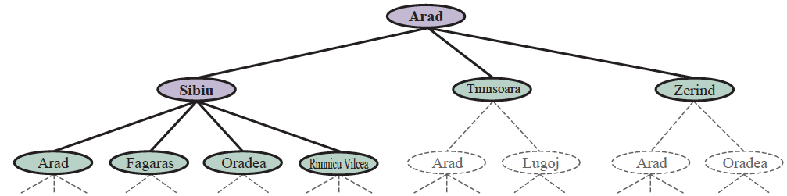
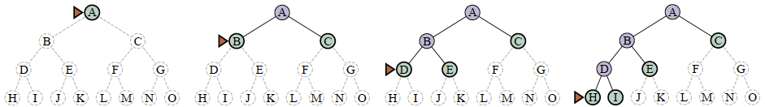
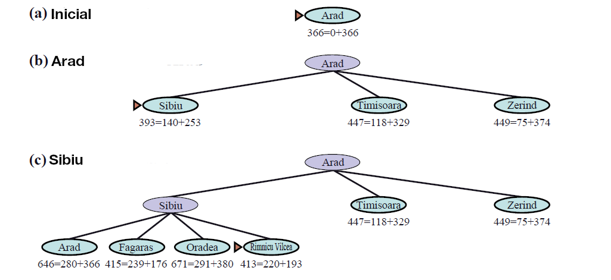
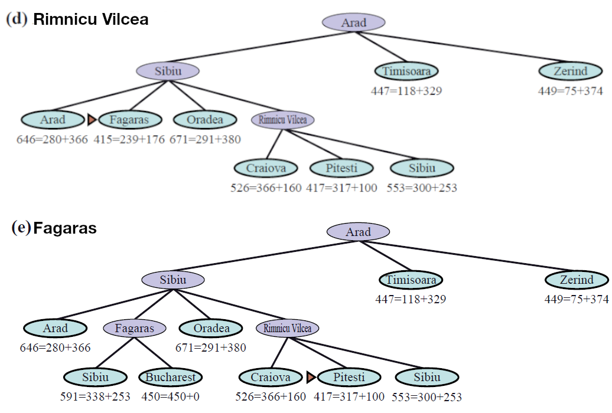
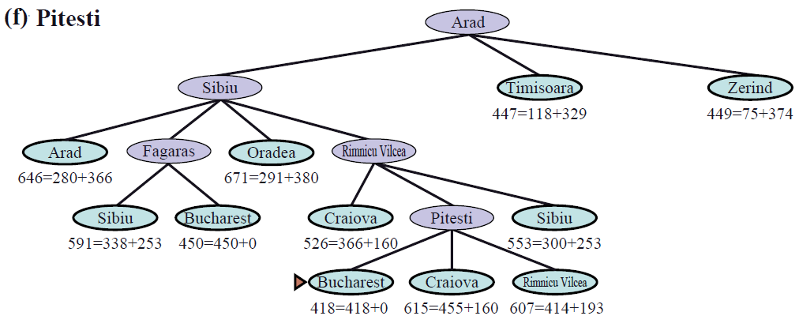

Els problemes de búsqueda tindran
Una solució és una seqüència d'estats (un plà) que ens porten de l'estat inicial a l'estat final
Tenim dues botelles d'aigua, una de 4 litres i una altra de 3 litres. Volem obtenir 2 litres d'aigua. Podem omplir les botelles, buidar-les o trasvasar l'aigua d'una a l'altra.
(0,0) + buidar(4) = (0,0)
Tenim un tauler de 3x3 amb 8 peces numerades del 1 al 8 i un espai buit. Volem moure les peces per aconseguir l'estat final.

Els algorismes de cerca són algorismes de propòsit general
Sortida:
Obrim Arad: {Z<A>, T<A>, S<A>},
Obrim Sibiu: {Z<A>, T<A>, A<S,A>, O<S,A>, F<S,A>, R<S,A>}
Obrim Fagaras: {Z<A>, T<A>, A<S,A>, O<S,A>, R<S,A>, S<F,S,A>, B<F,S,A>}
Tenim la solució en la frontera. Cost: 140+99+211 = 450
def cerca_amplada(estat_inicial): """Cerca en amplada en un problema.""" frontera = collections.deque([estat_inicial]) visitats = set() while frontera: estat = frontera.popleft() visitats.add(estat) if es_solucio(estat): return estat for succesor in succesors(estat): if succesor not in visitats: frontera.append(succesor)
(0,0)
(2,*)
(*, 2)

def cerca_profunditat(estat_inicial): """Cerca en profunditat en un problema.""" frontera = collections.deque([estat_inicial]) while frontera: estat = frontera.pop() if es_solucio(estat): return estat for succesor in succesors(estat): if not cicle(problema, succesor): frontera.append(succesor)
def cerca_profunditat_limitada(estat_inicial, l): """Cerca en profunditat limitada en un problema.""" frontera = collections.deque([estat_inicial]) while frontera: estat = frontera.pop() if es_solucio(estat): return estat for succesor in succesors(estat): if not cicle(problema, succesor) and profunditat(succesor) < l: frontera.append(succesor)
def cerca_profunditat_iterativa(estat_inicial): """Cerca en profunditat iterativa en un problema.""" l = 0 while True: solucio = cerca_profunditat_limitada(estat_inicial, l) if solucio is not None: return solucio l += 1
def cerca_cost_uniforme(estat_inicial): """Cerca de cost uniforme en un problema.""" frontera = priority_queue([(0, estat_inicial)]) visitats = set() while frontera: cost_actual, estat = frontera.pop() visitats.add(estat) if es_solucio(estat): return estat for cost, succesor in succesors(estat): if succesor not in visitats: frontera.append(cost + cost_actual, succesor)
def cerca_voraç(estat_inicial): """Cerca voraç en un problema.""" frontera = priority_queue([(0, estat_inicial)]) visitats = set() while frontera: cost_actual, estat = frontera.pop() visitats.add(estat) if es_solucio(estat): return estat for cost, succesor in succesors(estat): if succesor not in visitats: frontera.append(heuristica(succesor), succesor)
Garanteix trobar la solució òptima (si és admissible)



def cerca_a_estrella(estat_inicial): """Cerca A* en un problema.""" frontera = priority_queue([(0, estat_inicial)]) visitats = set() while frontera: cost_actual, estat = frontera.pop() visitats.add(estat) if es_solucio(estat): return estat for cost, succesor in succesors(estat): if succesor not in visitats: cost_acumulat_h = cost + cost_actual + h(succesor) frontera.append(cost_acumulat_h, succesor)
Condició: Aquestes propietats es compleixen si la heurística és admissible
def cerca_a_limitada(estat_inicial, l): """Cerca A* limitada en un problema.""" frontera = priority_queue([(0, estat_inicial)]) visitats = set() while frontera: cost_actual, estat = frontera.pop() visitats.add(estat) if es_solucio(estat): return estat for cost, succesor in succesors(estat): if succesor not in visitats and cost_acumulat_h < l: cost_acumulat_h = cost_actual + cost + h(succesor) frontera.append(cost_acumulat_h, succesor)
def cerca_a_iterativa(estat_inicial): """Cerca A* iterativa en un problema.""" l = 0 while True: solucio = cerca_a_limitada(estat_inicial, l) if solucio is not None: return solucio l += 1
def cerca_a_ponderat(estat_inicial, epsilon): """Cerca A* ponderat en un problema.""" frontera = priority_queue([(0, estat_inicial)]) visitats = set() while frontera: cost_actual, estat = frontera.pop() visitats.add(estat) if es_solucio(estat): return estat for cost, succesor in succesors(estat): if succesor not in visitats: cost_acumulat_h = cost_actual + cost + h(succesor) * epsilon frontera.append(cost_acumulat_h, succesor)
def cerca_anytime_a(estat_inicial): """Cerca Anytime A* en un problema.""" epsilon = 100 while epsilon > 1: solucio = cerca_a_ponderat(estat_inicial, epsilon) yield solucio epsilon /= 2
https://www.youtube.com/watch?v=2XjzjAfGWzY